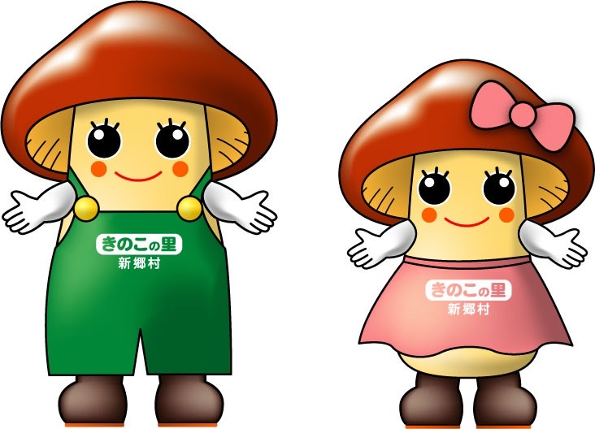

Profile
自己紹介

| Name. | 〇〇△△ |
| Age. | 26 |
| Career. | 〇〇大学卒業 株式会社〇〇に入社 |
Self PR
自己PR
好きなこと
私は体を鍛えることが好きです。鍛えることで自分自身の自信に繋がり、 行動力に繋がる為、体を鍛えることは日課として行っております。
得意なこと
私はプログラミングを学習しており、ウェブサイトやウェブサイトを 作ることが得意です。また、自分自身でスキルを身につけている ことでクリエイティブ思考が身に付き、具体的な企画を練る事が得意です。
今までの経験
私が学生の頃からITベンチャー企業で営業経験を積み、テクノロジーに 特化したセールススキルを身につけて参りました。また、現在ではウェブ メディア関連の営業を行っております。
Vison
目標
クリエイティブ性を取り入れた人材になる
私の人生において、クリエイティブな仕事に触れる機会はとても多かったです。
しかし、自分自身のクリエイティブ性は皆無でした。
我々と自分自身でも何かを生み出したいと思いが強まり、
現在ウェブ関連のプログラミングを学習しております。
将来的にはフルスタックエンジニアを目指し、
セールスとプログラミングの領域で
イノベーションを起こしたいと考えております。